/* abraham-oghobase - proofs */
11 plates. Deterministic overlays rendered by the composition-analysis skill.
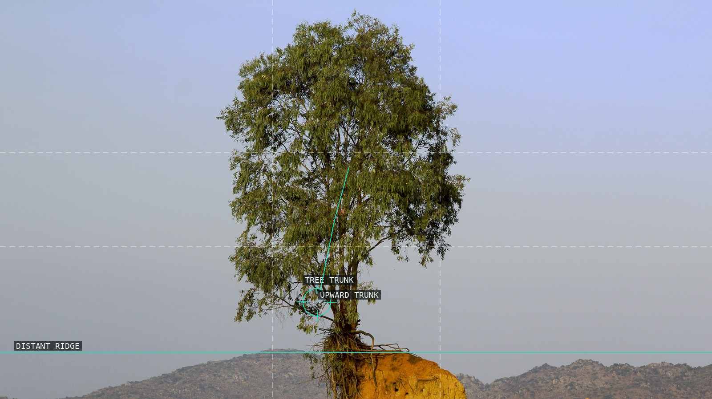
01-anatomy-of-landscape-jos-13
Tree, low ridge, and open sky establish a vertical measure.
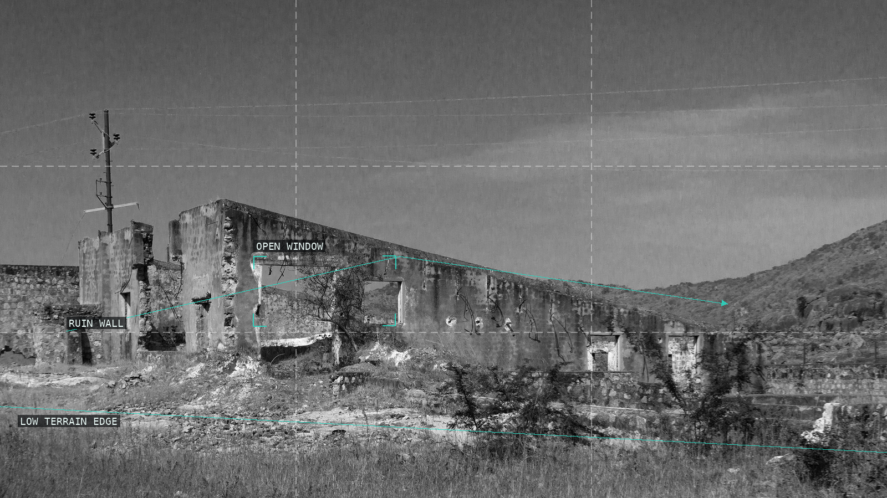
02-anatomy-of-landscape-jos-16
A ruined wall climbs through an open monochrome field.
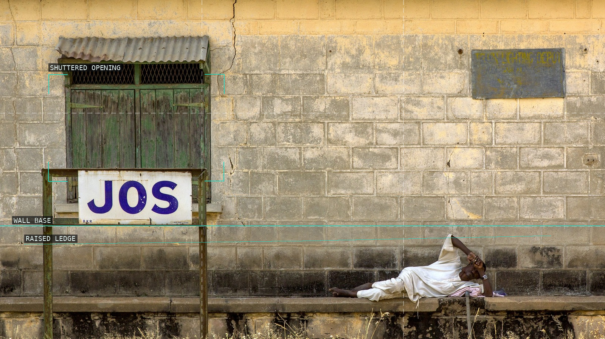
03-anatomy-of-landscape-jos-21
Sign, shuttered opening, ledge, and reclining figure share a wall.
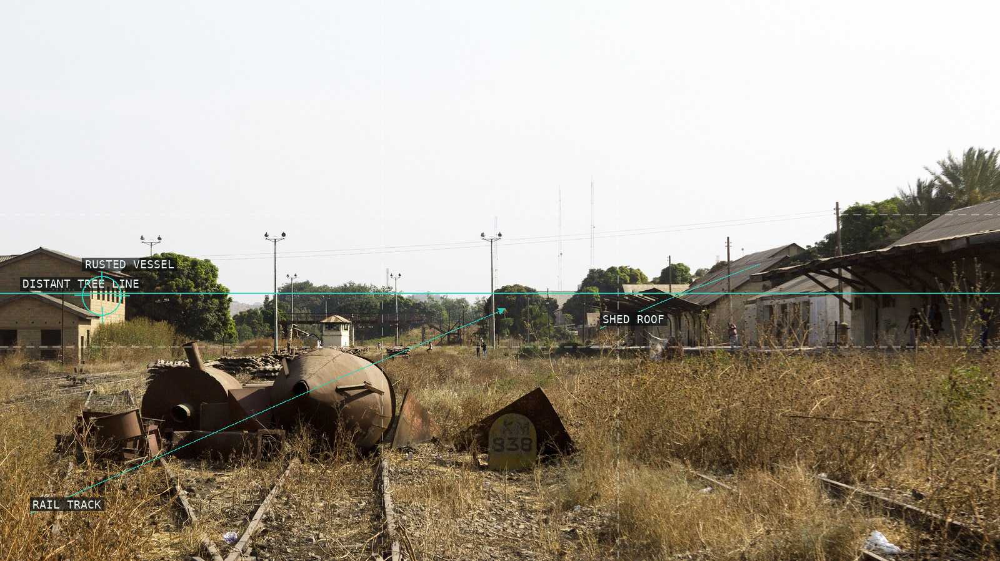
04-anatomy-of-landscape-jos-25
Tracks carry discarded industrial vessels toward the distance.
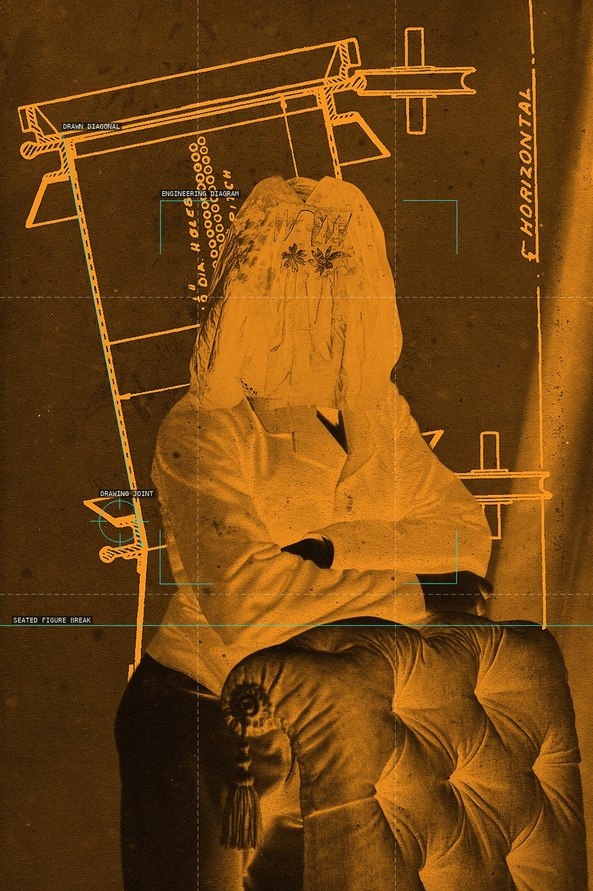
05-alloiosis-08
Diagrammatic lines meet a seated, hooded body.
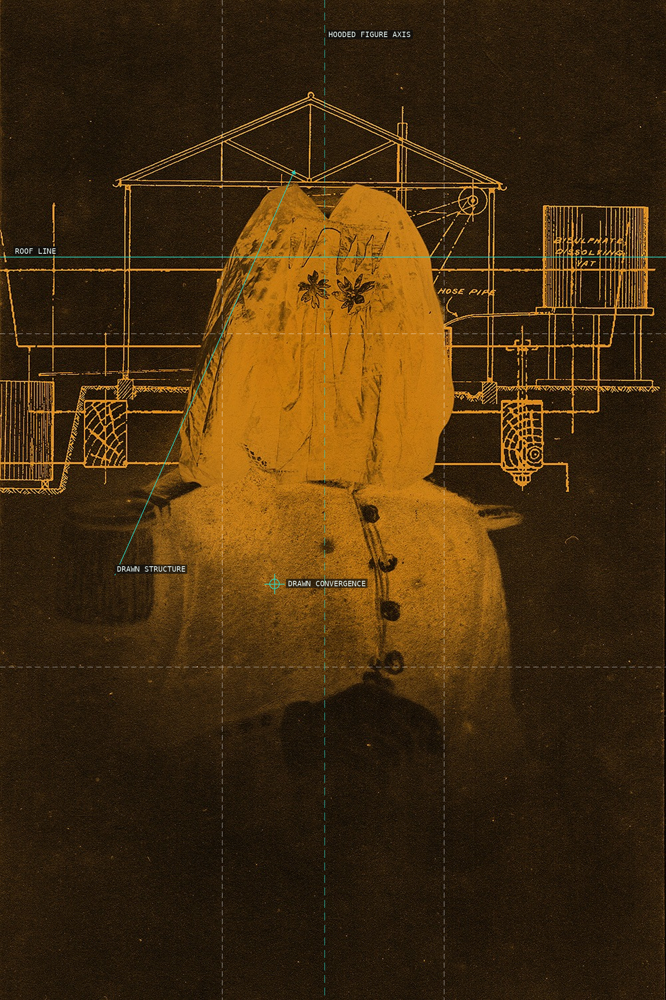
06-alloiosis-06
Centered body and architectural drawing meet across a shared axis.
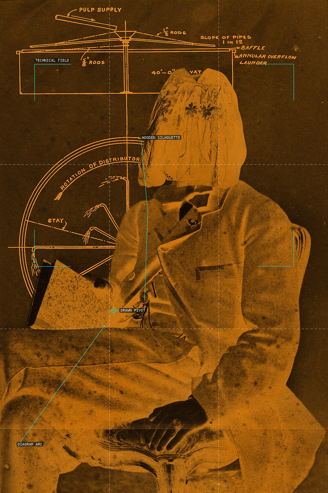
07-alloiosis-07
A hooded silhouette blocks a field of printed engineering marks.
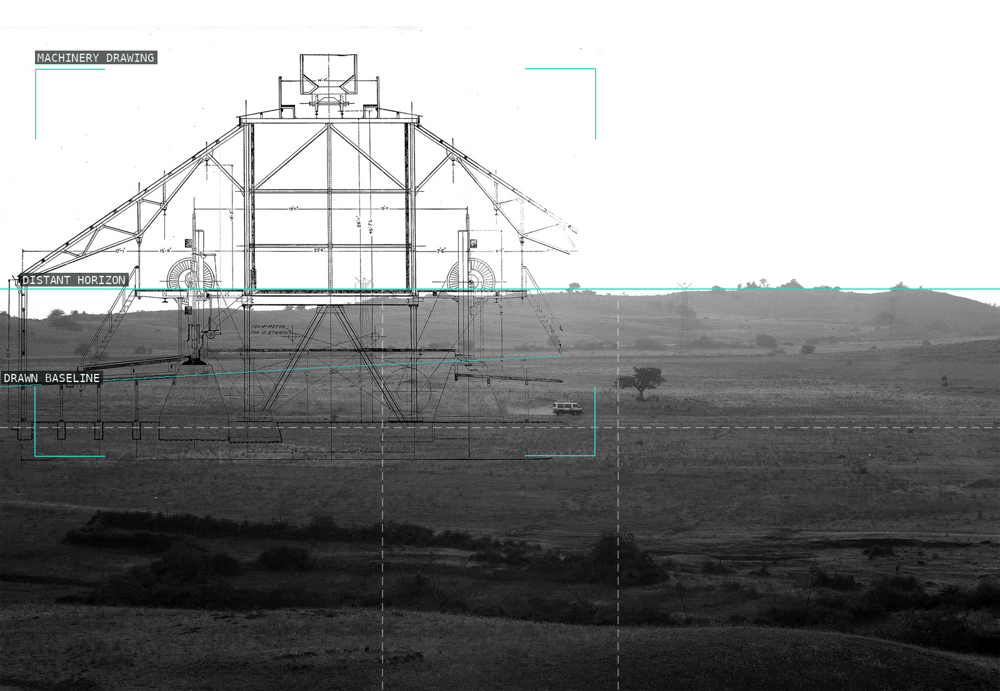
08-metallurgical-practice-landscape-01
A machinery drawing expands across a low landscape horizon.
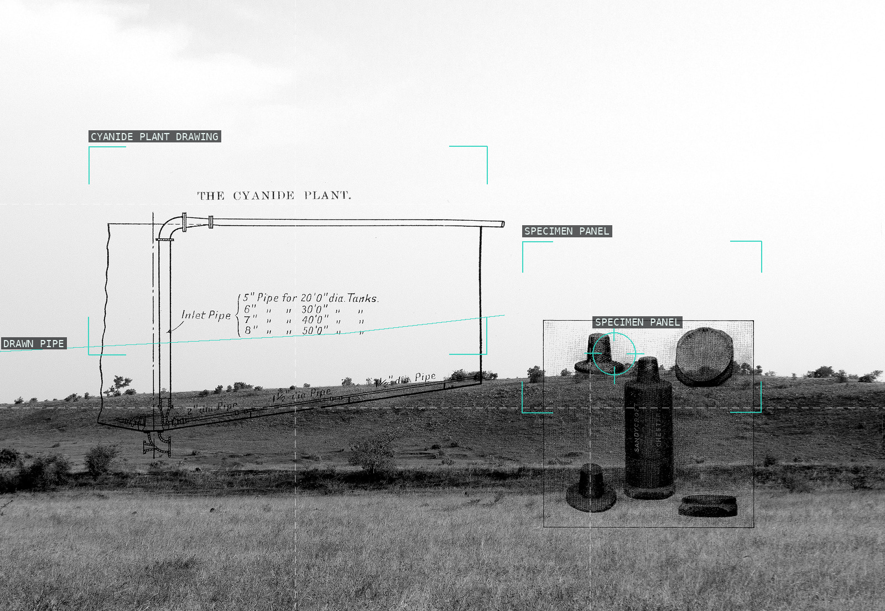
09-metallurgical-practice-landscape-04
Plant and specimen drawings occupy the land as a measured field.
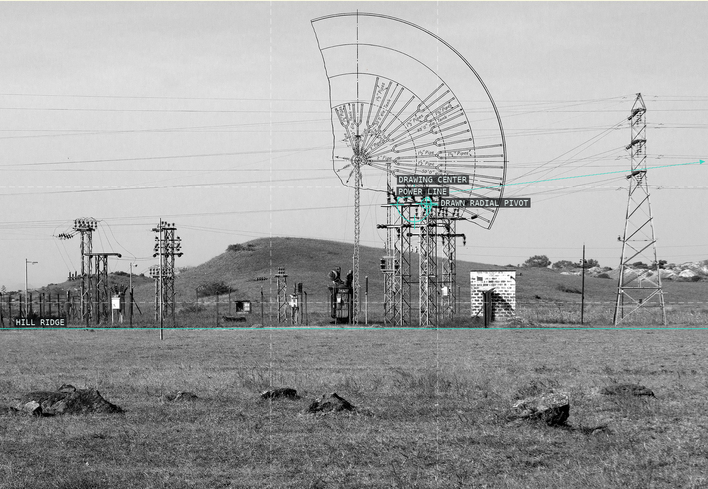
10-metallurgical-practice-landscape-03
Electrical infrastructure is made to answer a radial technical diagram.
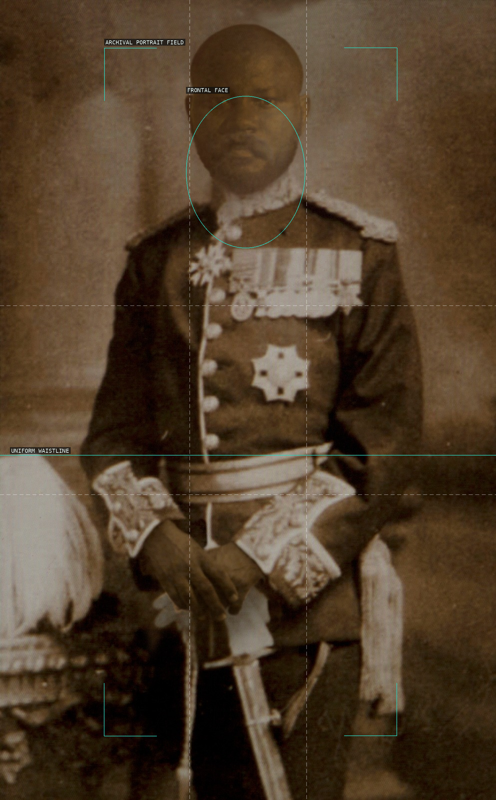
11-colonial-self-portrait
Frontal face, uniform waistline, and archival field hold a staged authority.